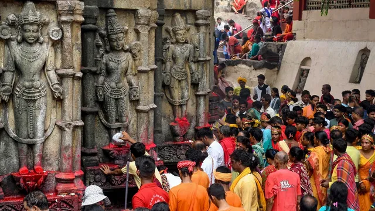

Assam
Kamakhya: The Bleeding Goddess
Welcome to the sacred Nilachal Hills in Guwahati, home to the Kamakhya Temple, one of the most potent and revered Maha Shakti Pithas in all of India. This is not a temple of conventional idols, but a sanctuary of the living, breathing creative force of the universe—the Divine Mother in her most primal form. A pilgrimage here is a journey into the heart of Tantra and the profound worship of Shakti, the divine feminine energy.
The Puranic Origin: The Womb of Creation
The *Kalika Purana* narrates that after the self-immolation of Goddess Sati, a grief-stricken Lord Shiva wandered the cosmos carrying her body. To restore cosmic balance, Lord Vishnu used his Sudarshana Chakra to dismember the body, and the pieces fell across the Indian subcontinent. It is here, on Nilachal hill, that her *yoni* (womb or vulva), the very source of all creation, is believed to have fallen. Thus, this Tirtha represents the origin point of life itself.
Key Spiritual Experiences
Darshan of the Yoni-Mudra Pitha: The temple's sanctum sanctorum (*garbhagriha*) contains no idol. Instead, devotees worship a rock fissure in the shape of a yoni, from which a natural underground spring perpetually flows. This *yoni-mudra pitha* is considered the living form of the Goddess. Touching the sacred water and offering a red cloth is the central act of worship.
Ambubachi Mela: The Festival of Menstruation. This unique four-day festival, held annually during the monsoon, celebrates the menstruation of the Goddess. The temple remains closed for three days as it is believed the Mother Earth is undergoing her annual cycle of fertility. On the fourth day, the temple reopens to massive crowds who come to receive the sacred *rakta bastra* (pieces of red cloth moistened with the sacred fluid), a powerful symbol of fertility and creative power.
A Center of Tantra: Kamakhya has been a revered center for Tantra for centuries. The energy of the place is palpable, attracting spiritual seekers and Tantrics from all over the world who come to perform their *sādhanā* and connect with the primal energy of Shakti.